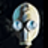

 Chornobyl Liquidators
Detalles
 |
|
| Tiempo de juego | No Jugado |
| Última actividad | Nunca |
| Añadido | 11/6/2024 15:27:56 |
| Modificado | 11/17/2024 14:28:56 |
| Estado de finalización | No Jugado |
| Librería | Playnite |
| Fuente | 1 TB 1 |
| Plataforma | PC (Windows) |
| Fecha de lanzamiento | 6/6/2024 |
| Puntuación de la Comunidad | 45 |
| Puntuación de la Crítica | |
| Puntuación de usuario | |
| Género | Acción Aventura Indie Rol Simuladores |
| Desarrollador | Frozen Way Live Motion Games |
| Editor | Frozen Way |
| Característica | Logros De Préstamo Familiar Un Jugador |
| Enlaces | Punto de encuentro Discusiones Guías Noticias Página de la tienda PCGamingWiki Logros |
| Tag | Acción Acción y aventura Ambientales Años 80 Aventura Buena trama Exploración Finales múltiples Guerra Fría Históricos Las elecciones importan Mundo abierto Posapocalípticos Primera persona Realistas Simulación Simulador inmersivo Supervivencia Terror psicológico Un jugador |
Descripción
El 26 de abril de 1986 se produjo la mayor catástrofe nuclear de la historia de la humanidad. Como consecuencia de la explosión y destrucción del reactor número 4 de la central nuclear de Chernóbil, se liberó a la atmósfera una enorme cantidad de isótopos radiactivos. Se enviaron escuadrones de liquidadores para combatir a este enemigo invisible y mortal. No eran héroes, pero fueron llamados a realizar actos heroicos. Muchos de ellos pagaron con su propia salud, e incluso con sus vidas...


CONTENER LAS CONSECUENCIAS DE LA CATÁSTROFE
Ponte en la piel de un héroe anónimo que se enfrenta a una radiación traicionera. Actúa como uno de los bomberos que extinguieron el fuego en las ruinas del reactor nº 4 aquella fatídica noche. Recorre la ciudad abandonada de Pripyat como dosimetrista, luchando contra el polvo y las nubes radiactivas. Con un traje antirradiación, explora los túneles bajo el reactor, en busca de la verdad. Coge una pala y limpia el grafito radiactivo del techo de la sala de turbinas de la Unidad 3. Sé testigo del infierno con tus propios ojos...TOMAR DECISIONES
Tus decisiones afectarán no sólo a tu destino y al de tus seres queridos, sino también al destino del mundo. Enfréntate al despiadado aparato de represión soviético y resiste a los opresores de la KGB, o sométete obedientemente a su voluntad. ¿Qué será más importante para ti: la seguridad de tu familia o la verdad?DESCUBRA LA VERDAD
¿Tiene el valor de descubrir la verdad sobre el desastre que cambió el mundo? Ahora tienes una oportunidad única de ser testigo y aportar tu granito de arena. Conviértete en liquidador de Chernóbil y sumérgete en los acontecimientos que alteraron el curso de la historia para siempre.CARACTERÍSTICAS PRINCIPALES DE CHORNOBYL LIQUIDATORS:
- vive la acción de la liquidación desde una perspectiva en primera persona,
- asumir el papel de bombero, liquidador y oficial al mando,
- utilizar equipos especializados de extinción de incendios y protección química,
- luchar contra la radiación para sobrevivir a la operación de limpieza,
- explorar lugares emblemáticos de la central y la zona contaminada,
- descubrir la difícil verdad a través de conversaciones y encontrando diversos documentos,
- toma decisiones morales increíblemente difíciles y ¡decide el destino del mundo!